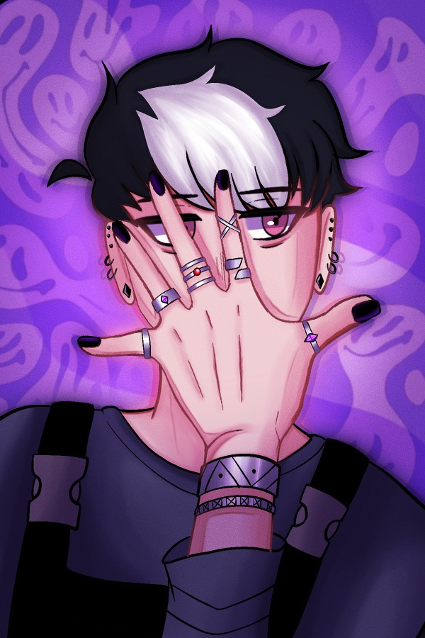

Nox Vasquez
Nickname: none
Backstory
During his childhood, Nox endured a harrowing existence, subjected to relentless experimentation and isolated from the outside world due to the perceived danger of his nature. Only when the organization's leader, ######, sought to exploit Nox's abilities for selfish gains, did he find the opportunity to escape. Over the last three years, Nox has embraced a life in the Underground, adopting a vigilante persona to steal from the wealthy and support the oppressed within the Underground community.
Birthday: October 23rd
Age: 18
Height: 5'9
Abilities: Shadow Manipulation
